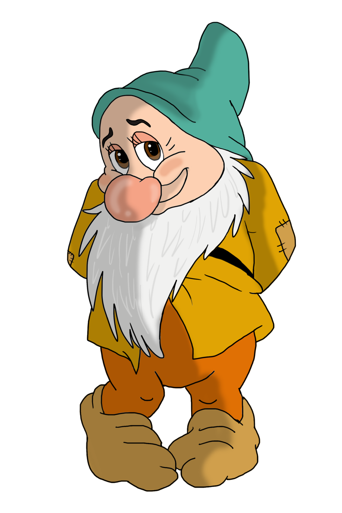
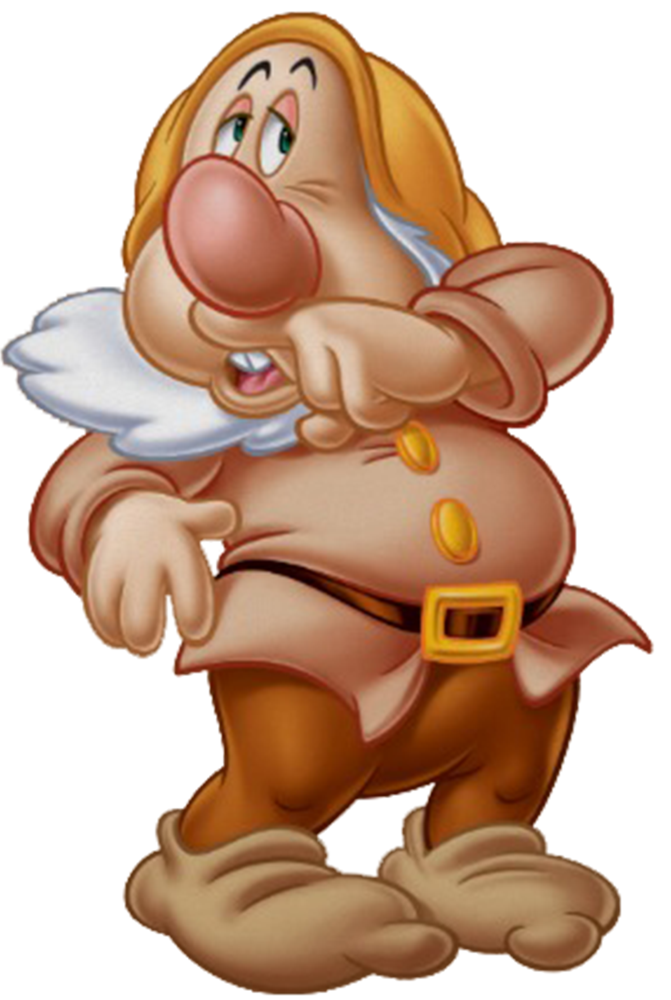
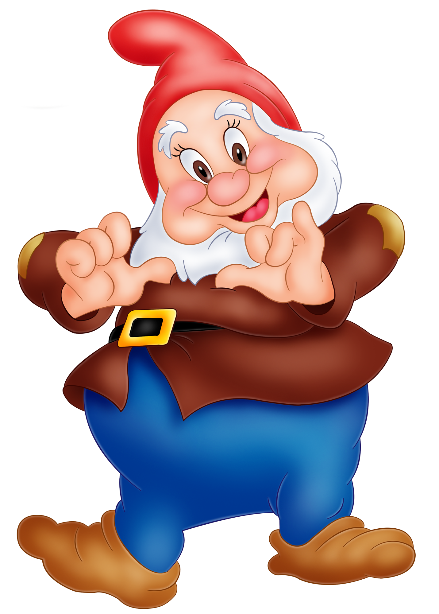
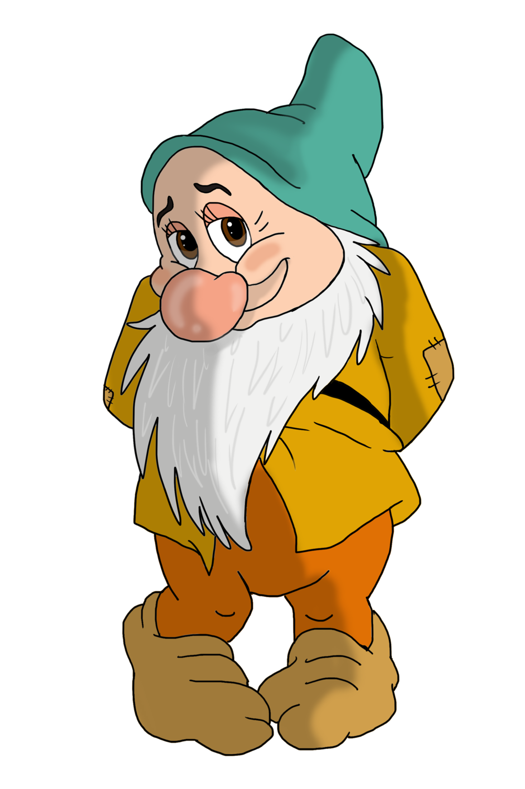
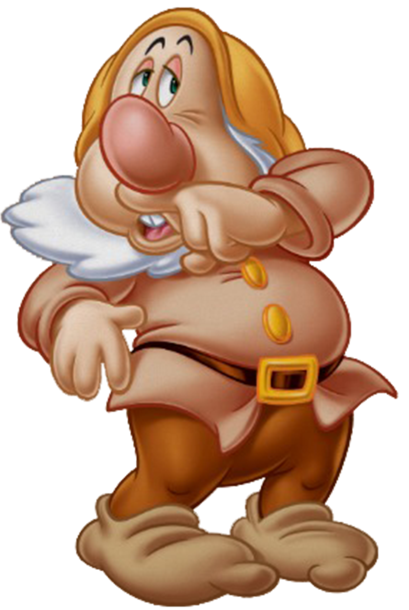
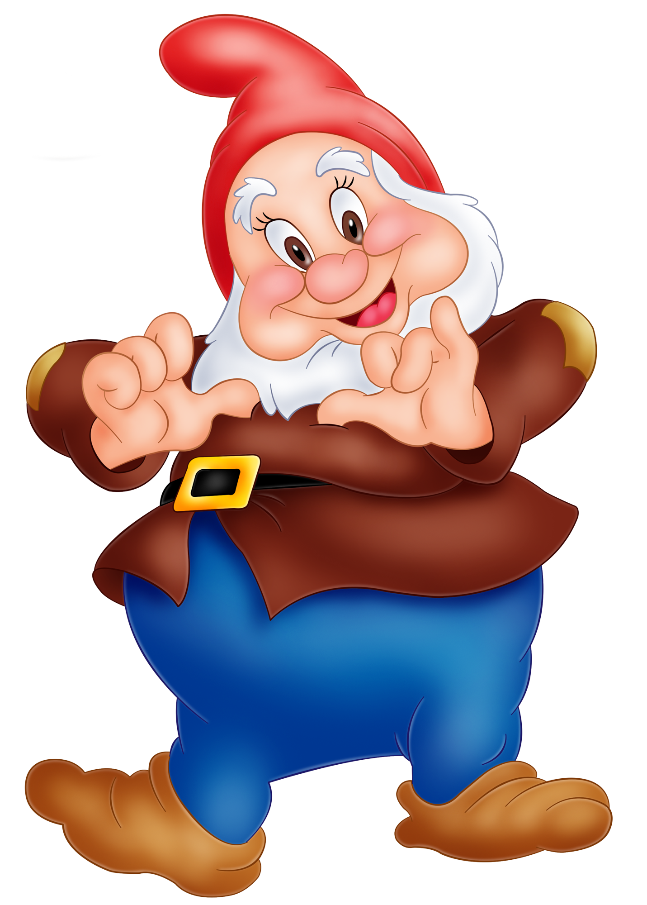

At the beginning of the story, a beautiful young queen sits sewing at an open window during a winter snowfall when she pricks her finger with her needle, causing three drops of red blood to drip onto the freshly fallen white snow on the black windowsill. Admiring the beauty of the resulting color combination, she says to herself, "How I wish that I had a daughter that had skin as white as snow, lips as red as blood, and hair as black as ebony." Some time later, the Good Queen gives birth to a baby daughter whom she names Snow White. Sadly, the Good Queen dies shortly after her daughter is born.
A year later, Snow White's father, the King, takes a second wife, who is very beautiful, but a wicked and vain woman. The new queen, Snow White's evil stepmother, possesses a magic mirror, which she asks every morning, "Magic mirror on the wall, who is the fairest one of all?" The mirror always replies: "My Queen, you are the fairest one of all." The Queen is always pleased with that, because the magic mirror never lies. But as Snow White grows up, she becomes more beautiful each day and even more beautiful than the Queen, and when the Queen asks her mirror, it says; "My Queen, you are the fairest here so true. But Snow White is a thousand times more beautiful than you."
This gives the queen a great shock. She becomes envious, and from that moment on, her heart turns against Snow White, and the Queen hates the girl more and more. Eventually, the angry Queen orders a huntsman to take Snow White into the deepest woods to be killed. As proof that Snow White is dead, the Queen demands that he returns with her lungs and liver. The huntsman takes Snow White into the forest. After raising his knife, he finds himself unable to kill her, and he spares her life. He instead brings the Queen the heart of a wild animal.
After wandering through the forest, Snow White discovers a tiny cottage belonging to a group of Seven Dwarfs. Since no one is at home, she eats some of the tiny meals, drinks some of their wine and then tests all the beds. Finally the last bed is comfortable enough for her and she falls asleep. When the seven dwarfs return home, they immediately become aware that someone snuck in secretly, because everything in their home is in disorder. During their loud discussion about who snuck in, they discover the sleeping Snow White. She wakes up and explains to them what happened, and the dwarfs take pity on her and let her stay with them in exchange for housekeeping. They warn her to be careful when alone at home and to let no one in when they are away delving in the mountains.
Meanwhile, the Queen asks her mirror once again: "Magic mirror in my hand, who is the fairest in the land?" The mirror replies: "My queen, you are the fairest here so true. But Snow White beyond the mountains at the seven dwarfs is a thousand times more beautiful than you". The Queen is horrified to learn that the huntsman has betrayed her and that Snow White is still alive. She keeps thinking about how to get rid of Snow White, then she disguises herself as an old peddler. The Queen then walks to the cottage of the dwarfs and offers her colorful, silky laced bodices and convinces Snow White to take the most beautiful laces as a present. Then the Queen laces her up so tightly that Snow White faints, causing the Queen to leave her for dead. But the dwarfs return just in time, and Snow White revives when the dwarfs loosen the laces.
The Queen then consults her mirror again, and the mirror reveals Snow White's survival. Now infuriated, the Queen dresses as a comb seller and convinces Snow White to take a beautiful comb as a present. She brushes Snow White's hair with the poisoned comb, and the girl faints again, but she is again revived by the dwarfs when they remove the comb from her hair. And the mirror tells the Queen that Snow White is still "a thousand times more beautiful". As a third and final attempt to rid herself of Snow White, the Queen secretly consults the darkest magic and makes a poisoned apple, and in the disguise of a farmer's wife, she offers it to Snow White. The girl is at first hesitant to accept it, so the Queen cuts the apple in half, eating the white (harmless) half and giving the red (poisoned) half to Snow White. The girl eagerly takes a bite and falls into a state of suspended animation. This time the dwarfs are unable to revive Snow White, and assuming that she is dead, they place her in a glass casket.
After a short period of time, a prince traveling through the land sees Snow White. He strides to her coffin and, enchanted by her beauty, instantly falls in love with her. The dwarfs succumb to his entreaties to let him have Snow White. The moment he lifts the coffin to carry it away, the piece of poisoned apple falls from between her lips, and Snow White awakens, saying, "Where am I?" The Prince then declares his love for her, and soon a wedding is planned. Snow White and the Prince invite everyone to come to their wedding party, including Snow White's stepmother. Meanwhile, the Queen, still believing that Snow White is dead, again asks her magical mirror who is the fairest in the land. The mirror says: "Thou, lady, art loveliest here, I ween; But lovelier far is the new-made Queen"
Appalled, in disbelief, and enraged, she decides to go. Not knowing that the Prince's bride was indeed her stepdaughter, she arrives at the wedding, and sees that the bride is Snow White, who she thought long dead. She chokes with rage, falls down, and dies. But Snow White and the prince lived and reigned happily over the land for many, many years; and sometimes they went up into the mountains and visited the dwarfs, who had been so kind to Snow White.